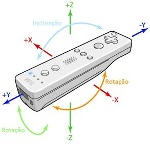

Características do Comando
O Wii Remote é um dispositivo similar a um típico comando de televisão, com 48 mm de comprimento, 36.2 mm de largura e 30.8 mm espessura, sendo composto por:
- Acelerómetro que proporciona 3 dimensões de dados de aceleração (x, y, z).
- Câmara de infravermelhos.
- Doze botões.
- Motor de vibração.
- Quatro LEDS azuis.
- Altifalante.
A Figura 1 exemplifica a forma como o comando interpreta os dados relativamente à
aceleração:

Figura 1 – Imagem exemplificativa de como o registo da aceleração é feita na aplicação.